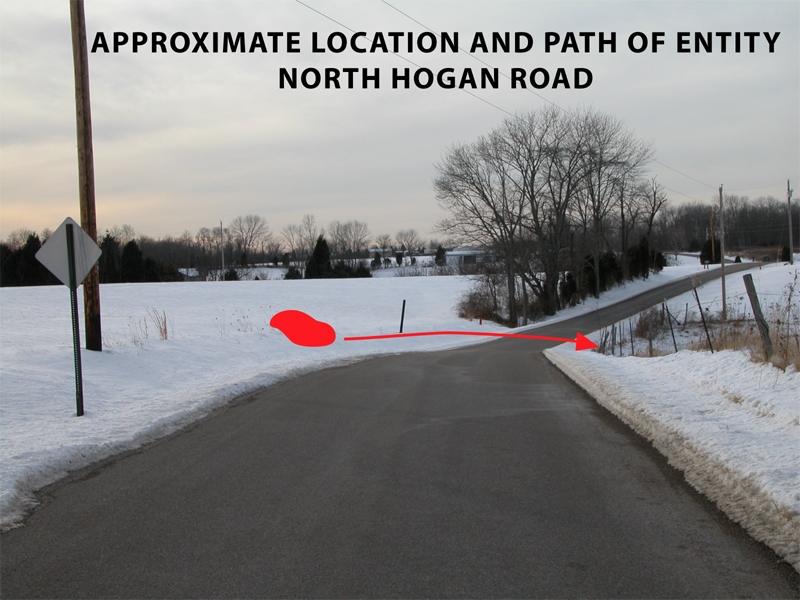
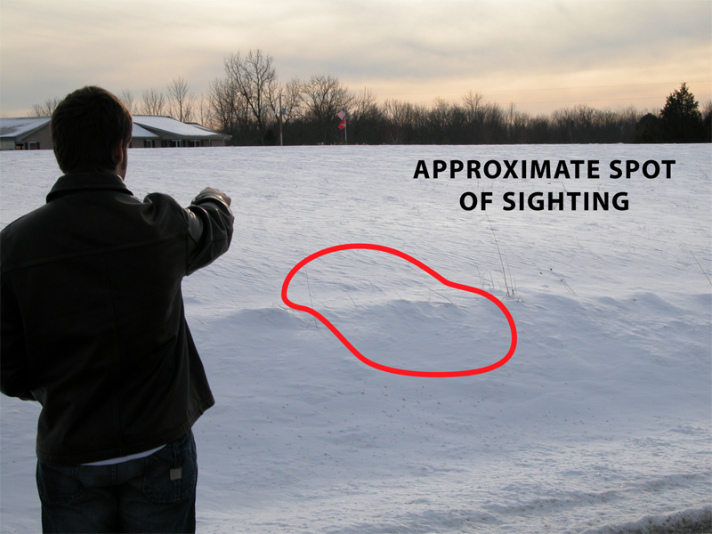
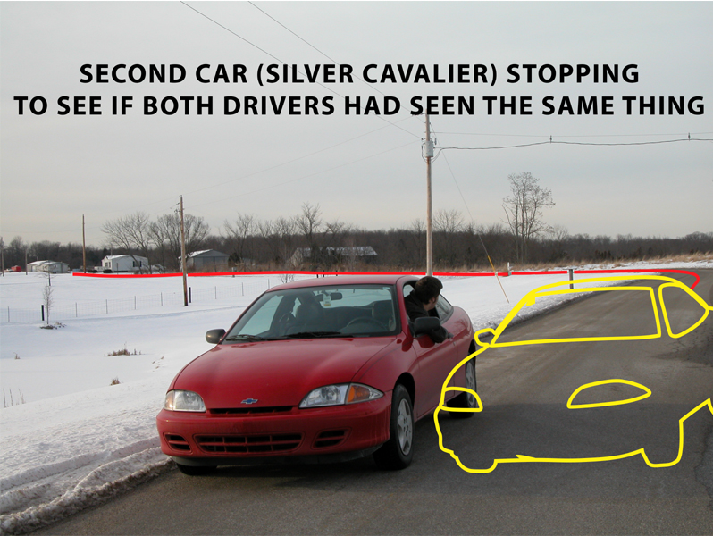

NOTE: IF YOU HAVE ANY INFORMATIONABOUTTHIS
EVENT, PLEASE CALL 859-801-6767
SUBJECT: Sighting of unusual figure
LOCATION: Manchester, Indiana, North Hogan Road (Dearborn County)
DATE: Saturday, January 24 - 7:30 p.m.
SUMMARY
A 17-year old motorist traveling almost10-miles north of Aurora, Indiana around 7:30 p.m. at night on Saturday,January 24, claims to have encountered an unusual 'figure' in the roadway.
The story was first related second-handby his uncle, Jerry Schedel (name used with permission), to Bob Leiboldof Natural Light Productions, producer of the Cincinnati-based cable televisionprogram "UFO Update: LIVE!" on Sunday, January 25. After arrangements weremade, I spoke directly with the primary claimant by telephone on two occasionsafter 8:30 p.m. Monday evening, January 26, confirming the story earliergiven and asking additional questions to the witness.

EYEWITNESS DRAWING
Click on ALL images for larger view
Thanksto JERRY SCHEDEL
The witness lives in Manchester,Indiana and is a senior at South Dearborn High School. He has 1-sistercurrently in College and lives at home with his mother and father. Hisname will not be used in this report.While driving his black Chevrolet Cavalier,a 1999 2-door model southbound along North Hogan Road, near Manchester,Indiana, a "figure" was spotted in the headlights of the automobile asit was crouched down near a puddle of water. From the driver's perspective,the "figure" was spotted out the windshield on the right of the car.
"I passed it and looked in rear viewmirror, then it was standing," he said.
After passing the frail-looking figure,the driver looked into his rear view mirror and again observed - illuminatedby the tail lights of his car - what he described as a tall, abnormal figurethat moved strangely with pointed joints that "buckled out." He estimatedthe figure stood around 6 feet, seven inches.
"I had no idea what it was," he said."It had protruding joints and moved very strangely."
The driver said he was able to ascertainthe figure, alleged to be dark gray or black and 'pencil thin,' stand upand take several steps toward the woods along the roadside. The 'figure'definitely walked on two legs and was thought, somehow, to be a male -although no clothing was noted. No face or eyes could be seen, but thewitness had the impression that the 'figure' was looking straight at him.
The 'figure' was immediately thoughtto be something out of the ordinary, not a human being. The duration ofthe sighting was 'hurried' and possibly within the 3 to 4 second range.

The driver continued on for a smalldistance after passing the figure and finally put on his brakes, comingto a stop at an estimated 2-minute "walking distance" on the road fromthe location of the sighting. He looked back to further observe the entity.At that point, a second car came into view and approached from the oppositedirection, passed and then reached the spot on the road where the 'figure'was thought to be. The 17-year old motorist reportedly watched closelyand observed the second car undertake what he thought to be an evasivemaneuver near the vicinity of where he thought the figure would be situated,then the car turned around at that spot and shortly pulled up behind him,somewhat in the grass.
Hecould then see it was an elderly couple in the car, both in their late60s or early 70s, and both with gray hair. The driver, who wore glasses,said: "Boy, did you see something back there? I'll tell you right now, that was no person."
The passenger in the silver 2-door Cavalier,an elderly female, said: "It was no human being. It was no man."
The elderly couple were reportedly "spooked"but offered to follow the first witness the remainder of the trip downNorth Hogan Road, clearly in the opposite direction of their intended destination route.
It was thought that the elderly coupleobserved this same 'figure' on the opposite side of the road, and possiblyhad observed it more closely.
With the elderly couple following closein the car behind him, the 17-year old motorist continued down North HoganRoad to his destination at a friends house where he called home to tellhis mother of the encounter, advising her to lock her doors (his residenceis less than 3-miles from the sighting location), and then called his uncle.The witness was said to become increasingly hysterical, and within an hourwas describing the figure as "an alien."
Whenasked by his uncle if there could be any alternative explanation for this'figure,' the witness said that there was a chance it could have been an"improperly dressed elderly person," but still described the object asa "dark, shadowy figure" and "super anorexic" that could have been wanderingnaked and lost (temperatures in the 20s) in the area without a coat. Ifso, the witness reportedly said, he would have 'felt badly' for the person.
The uncle, Jerry Schedel, was contactedwithin an hour of the sighting and traveled to the area with his wife some90-minutes later and did not see anything. There is a house and pond nearby,almost 1/4 mile from the area of the sighting. The uncle said his nephewknows the exact location and can identify the spot, but would not agreeto return to the area until daylight.
COMMENT
His uncle did try to get his nephew to rationalize how this sighting might be explained, but the witness openlyadmits not accepting his own speculation efforts, instead telling thisreporter: "I have no explanation for what this thing was, I think it musthave been some type of alien."
He said that he did travel downNorth Hogan road this afternoon during daylight, slowing down to surveythe location of the incident but saw nothing out of the ordinary and theground was also covered with around 4-inches of snow.
The witness sounds very sincere andcognizant. He answered my questions patiently and offered continued assistancein the investigation process, such as drawing a picture of the 'figure'and returning to the location for inspection of the area.
Filed,
Monday, January 26, 2004
KENNY YOUNG
UFO Research
https://kenny.anomalyresponse.com
UFO Hotline: 859-801-6767
E-mail:
FOLLOW UP INVESTIGATION BY RESEARCHER DONNIE BLESSINGI checked with the Aurora, Indiana Police Dept.at 812-926-1101 and the Dearborn County Sheriffs Dept. at 812-537-3431
No reports were made to either about any strangebeing seen in the area. - DB


{kind=link}
{kind=link}
{kind=link}